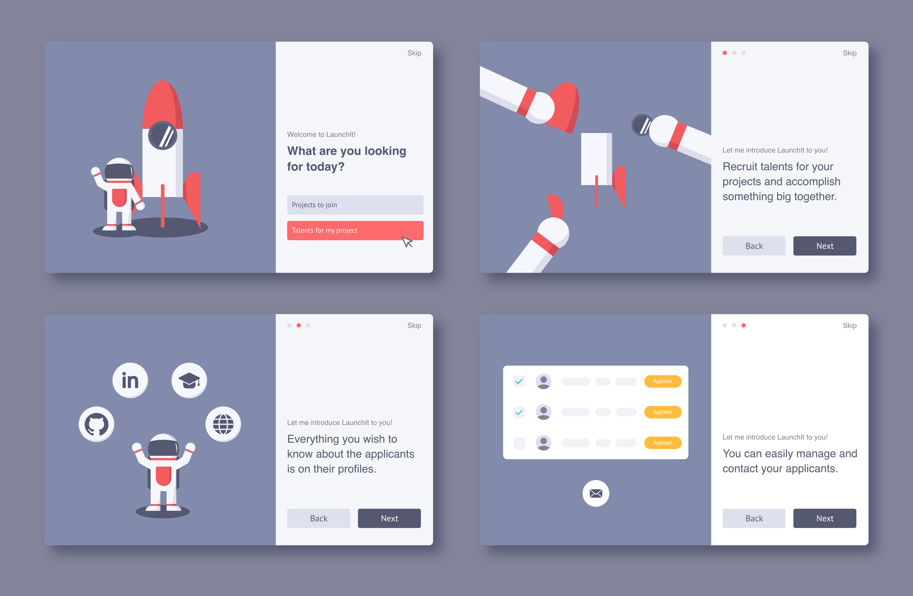
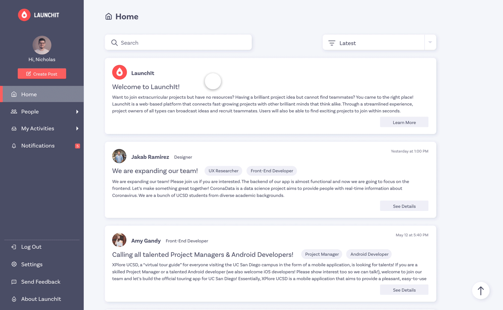
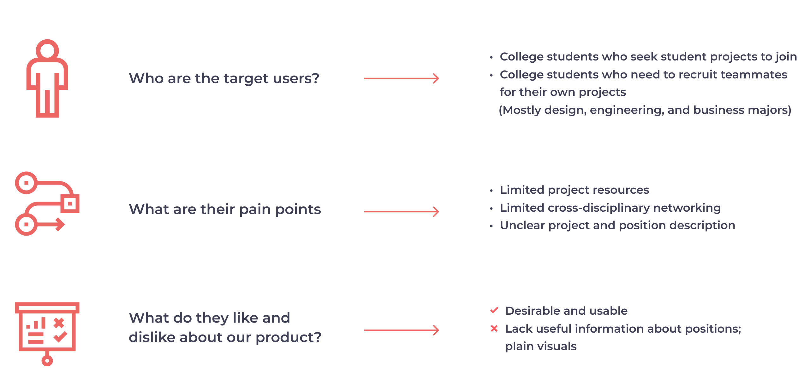
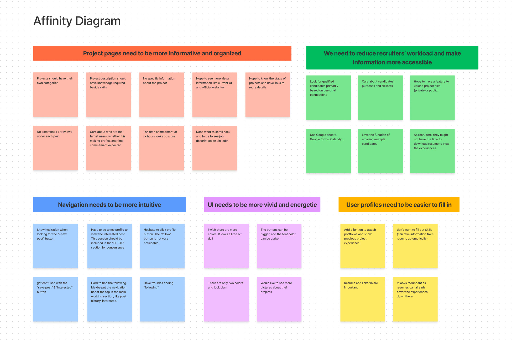
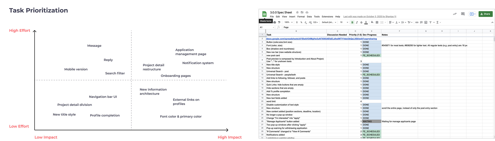
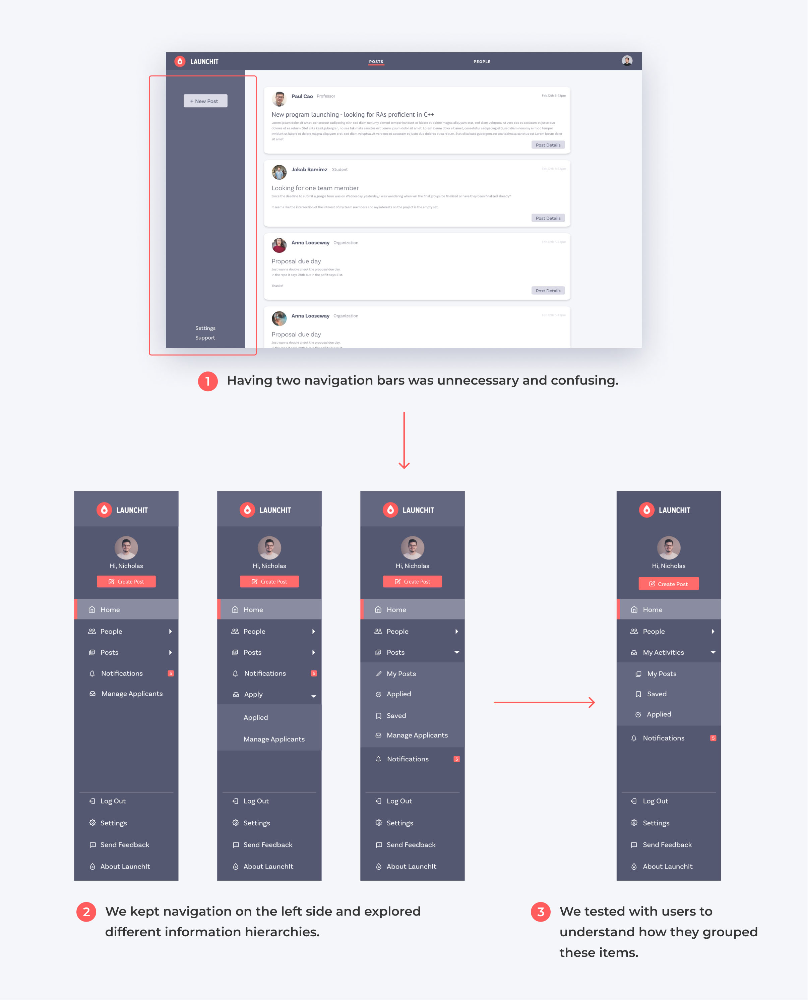
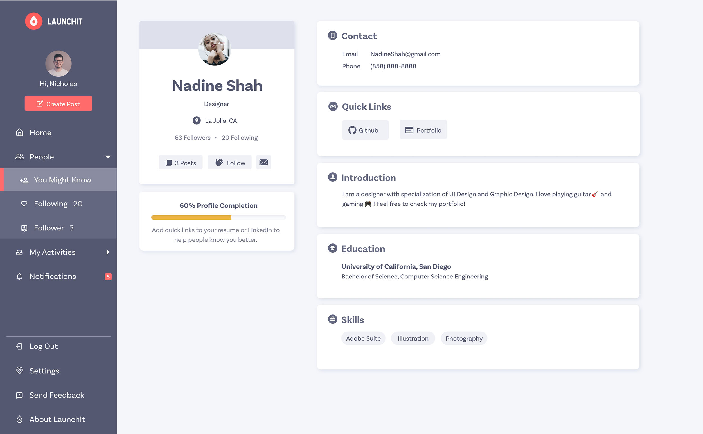
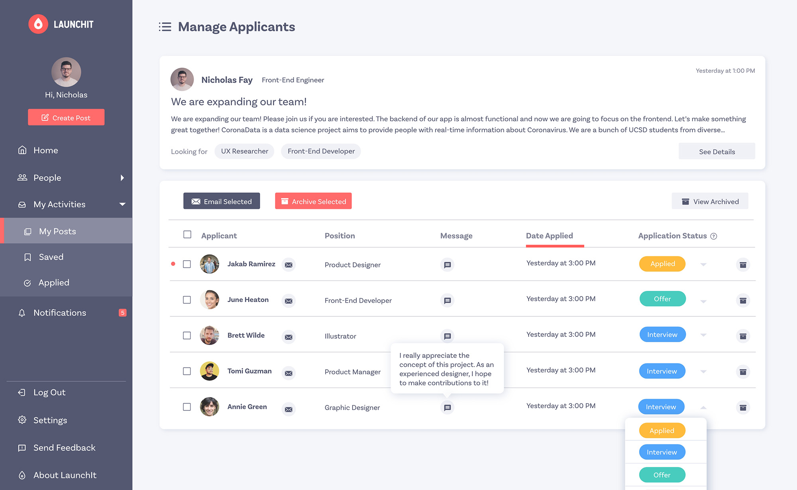
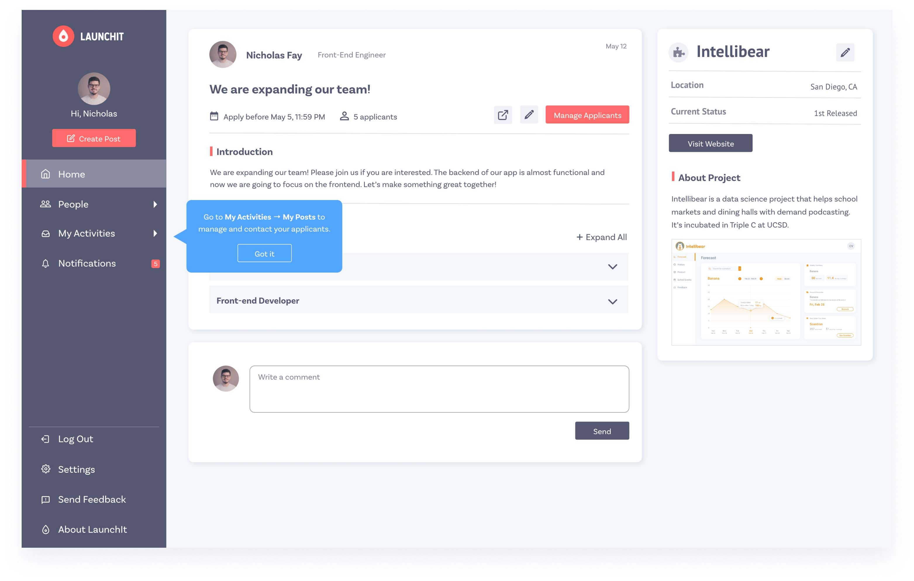
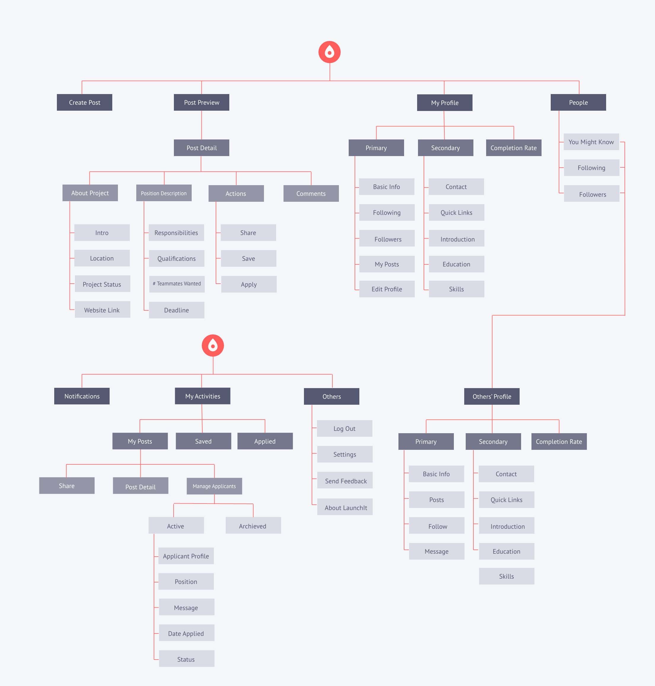

LAUNCHIT
Product & Visual Design · 2020
OVERVIEW
LaunchIt is a web-based idea incubator for college students. It connects students from various academic backgrounds, empowering them to achieve something bigger together. Many students are eager to make real-world impacts with what they have learned from class but have trouble finding projects or teammates. On LaunchIt, students can share their creative ideas and form teams for extracurricular projects.
MY CONTRIBUTIONS
- Headed and released the redesign of LaunchIt. Led the design of 5 new features to improve product usability.
- Conducted user interviews and usability tests.
- Iterated UX flows and prototypes based on research findings.
- Worked with the product manager and development team lead to build product strategies and roadmaps.
- Created illustrations for branding and empty pages.
DURATION
13 Months
MY ROLE
Product Design Lead
TEAM
2 Product Designers
1 Product Manager
11 Software Engineers
TOOLS
Adobe XD
Principle
Adobe Illustrator
Feature highlights
Easily onboard
Since users tend to skip tedious and complex tutorials, we created a fun and concise onboarding experience with animated illustrations that help them take a glimpse of our core features.

Feature highlights
Explore and join various projects
Students explore innovative projects of all kinds launched by their peers and faculty members in college. Under project descriptions, we show everything users care about in a clear and organized fashion. Once they find the one they are interested in, they can apply to be part of it with a few clicks.

Feature highlights
Manage your projects at one place
Project founders can manage applicants and get to know them comprehensively on this all-in-one platform. They can edit applicant status and quickly access applicants' GitHub, LinkedIn, portfolios, and resumes.

Project context
Redesign LaunchIt for a shift in the project goal
LaunchIt was originally designed by a former UX designer. When I joined the team as the product design lead, they had completed the first Release. They also decided to shift the project focus from professor-student to student-to-student connections. My job was to redesign the whole product and implement new features to adapt to the project goal change and improve user experience.
Original Design
problem statement
What's the challenge?
How might we redesign LaunchIt to streamline college students’ experience of forming multi-disciplinary teams for extracurricular projects?
user interviews
Problems faced by college students
I worked with my fellow designer to interview 6 college students with different academic backgrounds, asking about their decision-making process when seeking projects to join or recruiting people for their projects. We also asked them to explore LaunchIt and provide feedback so we could start with minor design changes.
user persona
project seekers and project leaders
Our product is targeted at two groups of users, students seeking projects to join and project leaders who hope to grow their teams through recruitment. We synthesized our findings in interviews and came up with two user personas.
usability tests
Research goals
To further understand the gap between users' goals and our initial design, we decided to conduct usability tests. We set up three research goals:
- Is the user flow intuitive?
- Do we provide adequate information for users to join projects?
- Would project leaders like to use our products?
usability tests
Sythesize findings and prioritize tasks
We conducted the usability tests with 6 users and acquired many valuable findings. With a solid base of usability tests, we became confident to create more significant changes in our design, such as navigation, information architecture, and key functions. We developed an affinity diagram to synthesize what we heard and observed during usability tests and devised corresponding solutions.
We could make many changes based on the findings, but we didn't have enough capacity to implement them all. We prioritized tasks using the effort vs. impact matrix and applied a spreadsheet to keep track of the progress of design and development teams.
usability tests
Turn insights into decisions
There are two navigation bars in the original version, one on the top and one on the left. We found that having two navigation bars distracted users during the usability tests, so we decided to put all navigation components on one side bar. We designed at least 5 versions of navigation bars and conducted mini usability tests to find out which one is the most intuitive. I realized that users’ conceptual models on navigation are very different from mine since many users favored the version that I didn’t think would work at first.

When signing up for the first time, users are only asked to fill out some basic information. At the last step of signing up, they have the freedom to choose to either complete their profiles or skip this part for now. If they choose to skip, the system will later encourage them to complete profiles when they apply for project positions. The profile page also shows their level of completion to increase their motivation.

We reorganized the page of post details by clearly dividing project information and recruitment information into two cards. Readers can easily find all available positions under this project and their corresponding responsibilities and qualifications. In response to user needs, we also guide post creators to list out the duties of each position using bullet points rather than inputting big chunks of paragraphs that are less readable. In addition, they can add project logos and images to introduce their projects and teams better.

Project recruitment used to be considerably complex, as project leaders needed to employ different tools during the process, such as Google Form, Facebook, and Excel. We created a function for project leaders to manage applicants on one page. They can see all applicants’ information on this page from the applicant list. They can modify their application status and contact them via email. Click on a title in the first row, and the system will reorder the list based on that title.

The first-time users could not get what LuanchIt was for immediately. The PM suggested adding a documentation to introduce all functions of LaunchIt, but I believed that users wouldn't have patience to read through it. Therefore, I designed a concise and eye-catching introduction to the key features and a short step-by-step tutorial.

information architecture
track structural changes with information architecture
An information architecture was created to view the platform structure straightforwardly. We went through three major iterations as we redesigned the navigation and added new functions.

style guide
Ensure consistency with a detailed style guide
I created a very detailed style guide to ensure style consistency throughout all pages and for maintenance. It specifies the use of colors in different conditions and includes components that are used frequently .
takeaway
collaboration in a cross-functional team
My main takeaway from this project is the strategy of efficiently collaborating with computer engineers during product development. I used to deliver my design to front-end developers only until I finished a complete cycle of user interviews, usability tests, and prototypes. In this way, the team did not use time wisely, and developers quickly lost patience while waiting for my design. In contrast, developing LaunchIt was considerably efficient, as we streamlined the process through frequent and concise communication between designers and developers. One of the crucial things I did every week was working with the PM to create a task priority list for product development. The list vastly enhanced collaboration efficiency between the design and developing team by coordinating the two teams' schedules.